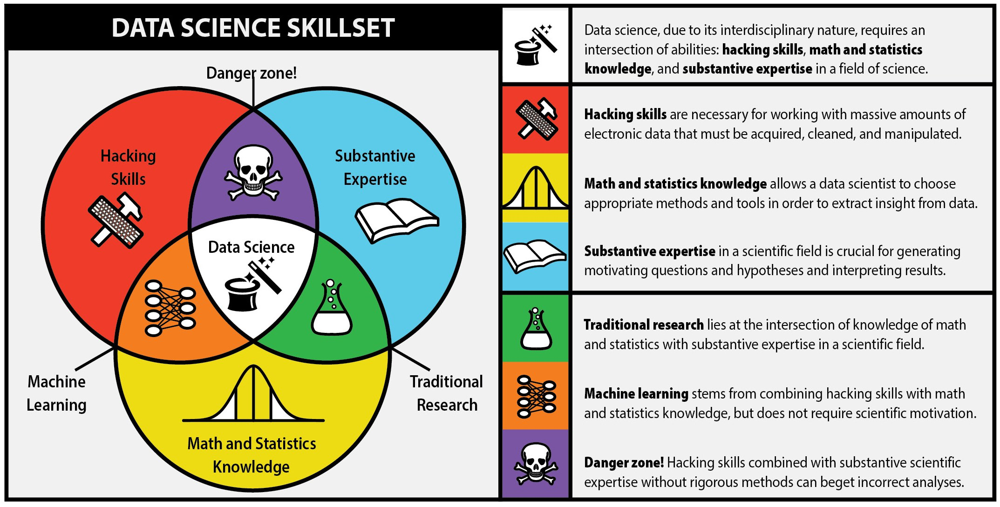

--- # Q&A ## Q1: Is this a statistics course? -- * No, this is a DataScience course -- ## Q2: So, what's the difference with DataScience? -- * Data-Science is statistics on a Mac. -- * A data-scientist is a statistician that lives in San Francisco. -- * A data-scientist is someone better in statistics than any software engineer, and better at software engineering than any statistician. --- ## Q3: Can you try a bit harder? -- The broad computer-facilitated application of mathematical tools to “make sense” of various structured and unstructured data, including * Data acquisition & storage * Data processing * Data exploration & visualization * Data analysis (Machine Learning, AI) ??? Notes <!--- ############################## NEW SLIDE ###################### ---> --- # The Data Science Skillset  ??? Notes <!--- ############################## NEW SLIDE ###################### ---> --- # Some examples ## The Patent Explorer ### One of our own "babies" * The application: http://35.228.97.122:3838/patent_app/ * The corresponging paper: ## Data Driven Journalism (check https://pudding.cool) * The largest vocab in Hip Hop... https://pudding.cool/2017/02/vocabulary/ * Where slang comes from... https://pudding.cool/2017/02/new-slang/ --- ## The power of data visualization * Our economic future: http://www.nytimes.com/interactive/2015/03/19/upshot/3d-yield-curve-economic-growth.html * Diseases and vaccines: http://graphics.wsj.com/infectious-diseases-and-vaccines/ ??? Notes <!--- ############################## NEW SLIDE ###################### ---> ---